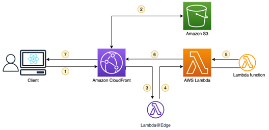

O primeiro titulo tem como base trazer a possibilidade de validar a conversão do arquivo PDF em Markdown.
Abaixo será apresentado um bloco de código.
import argparse
import html2text
class HTMLToMarkdownConverter:
def __init__(self):
self.converter = html2text.HTML2Text()
def convert(self, html_content):
markdown_content = self.converter.handle(html_content)
return markdown_content
def convert_file(self, html_file_path):
with open(html_file_path, 'r', encoding='utf-8') as file:
html_content = file.read()
markdown_content = self.convert(html_content)
return markdown_content
def save_as_markdown(self, markdown_content, markdown_file_path):
with open(markdown_file_path, 'w', encoding='utf-8') as file:
file.write(markdown_content)
def main():
parser = argparse.ArgumentParser(description='Convert HTML to Markdown')
parser.add_argument('html_file', help='Path to the HTML file')
parser.add_argument('markdown_file', help='Path to write the Markdown file')
args = parser.parse_args()
converter = HTMLToMarkdownConverter()
markdown_output = converter.convert_file(args.html_file)
print(markdown_output)
# Salvar como arquivo Markdown
converter.save_as_markdown(markdown_output, args.markdown_file)
if __name__ == "__main__":
main()
Neste campo iremos apresentar uma imagem e verificar o seu resultado convertido.

Apresentando estrutura de tópicos.
Opção 1
Opção 2
Opção 3
Primeiro
Segundo
Terceiro
Primeiro do Terceiro
Segundo do Terceiro
Primeiro do Segundo do Terceiro
Quarto